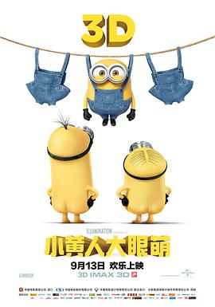

小黄人大眼萌 / Minions
又名：小黄人 / 迷你兵团(港) / 小小兵(台) / 小黄人大电影
在CX0173上看的，剧情比较老套，但是人物真是萌啊，还有Minionese这个语言 哈哈哈
作品信息
| 导演 | 凯尔·巴尔达 / 皮埃尔·柯芬 |
| 编剧 | 布莱恩·林奇 |
| 主演 | 桑德拉·布洛克 / 乔恩·哈姆 / 迈克尔·基顿 / 艾莉森·珍妮 / 史蒂夫·库根 / 珍妮弗·桑德斯 / 杰弗里·拉什 / 史蒂夫·卡瑞尔 / 皮埃尔·柯芬 / 凯蒂·米克松 / 迈克尔·贝亚蒂 / 真田广之 / 戴夫·罗森鲍姆 / 亚历克斯·道丁 / 保罗·索恩利 |
| 类型 | 喜剧 / 动画 |
| 制片国家/地区 | 美国 |
| 语言 | 英语 / 西班牙语 |
| 上映日期 | 2015-09-13(中国大陆) / 2015-07-10(美国) |
| 片长 | 91分钟 |
| IMDb | tt2293640 |
最后一次看到是 2026-08-01T11:06:28+10:00 · 豆瓣原页